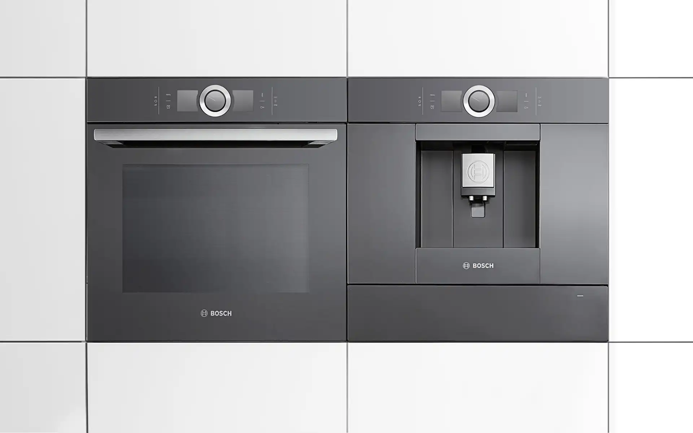
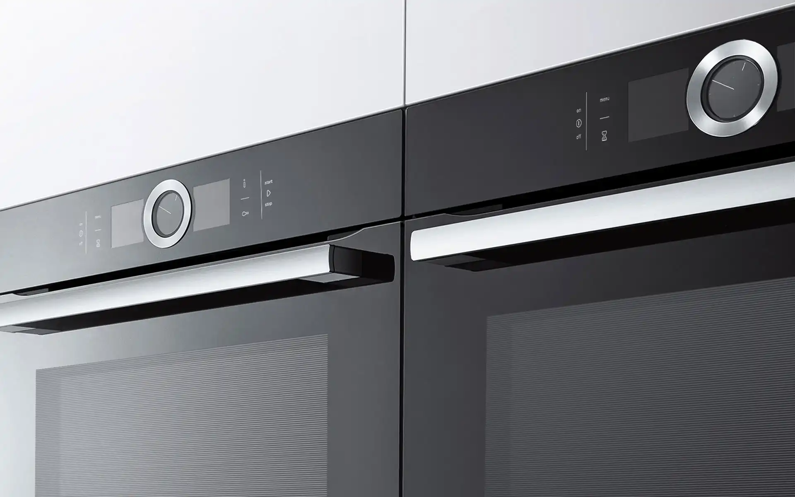
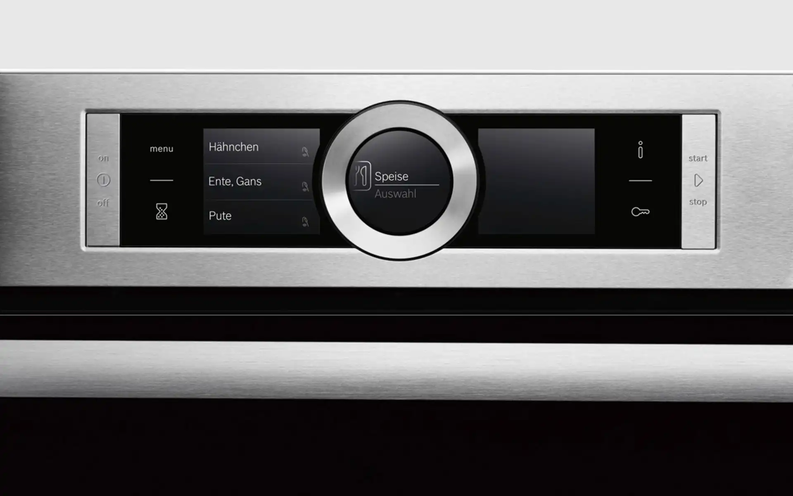
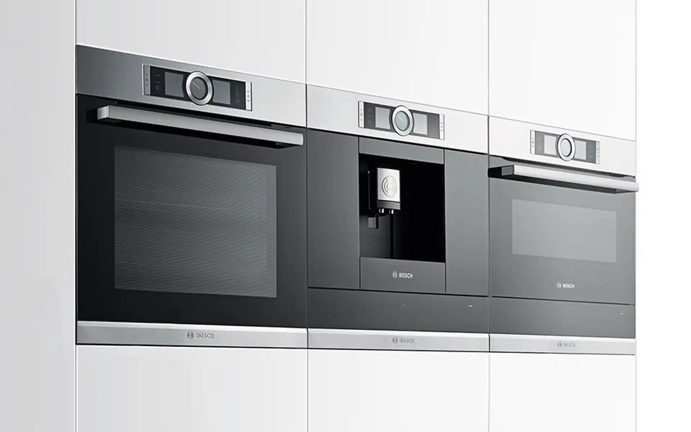

Bosch Series 8
Built-in Oven
Bosch Series 8
Einbauofen
Contemporary interior design is marked by open kitchens that have often replaced classic space
arrangements. The kitchen is defined as the centre of family life, a centre that is open to all sides.
The challenge for Selic Industriedesign consisted in forming the bridge between the Bosch Design Team and
the construction. The requirements of this architectural concept with its clear overall purist
straightline design were implemented by means of CAD directly in parametric construction data. In the
focus of the CAD development of these built-in devices stood the user interface with a central iconic
control ring which thanks to its sensor technology regulates the functions. This ring ensures a high
degree of user comfort as well as safe and intuitive operation.
Selić Industriedesign service: CAD design support, full-parametric CAD modeling and design refinement,
processing of design data for the engineering department
In der aktuellen Innenarchitektur haben offene Küchenkonzepte vielfach die klassische Raumaufteilung
abgelöst. Die Küche wird definiert als ein von allen Seiten zugängliches Zentrum des familiären Lebens.
Die Aufgabe für Selić Industriedesign bestand darin, die Brücke zwischen dem Bosch Design-Team und der
Konstruktion zu bilden. Die Design-Vorgaben dieses architektonischen Konzeptes mit seiner klaren
geradlinigen Formensprache wurden mittels CAD direkt zu parametrischen Konstruktionsdaten umgesetzt. Im
Fokus der CAD-Entwicklung dieser Einbaugeräte stand das Bedienpanel mit einem zentralen Bedienring, der
über eine hochentwickelte Sensortechnik die Funktionen regelt. Dieser Ring bietet ein hohes Maß an Komfort
und lässt den Nutzer sicher und intuitiv agieren.
Selić Industriedesign Dienstleistung: CAD-Design Unterstützung, vollparametrische CAD-Modellierung und
Detailgestaltung, Aufbereitung von Designdaten für die Bosch-Konstruktion




Images © BSH GmbH